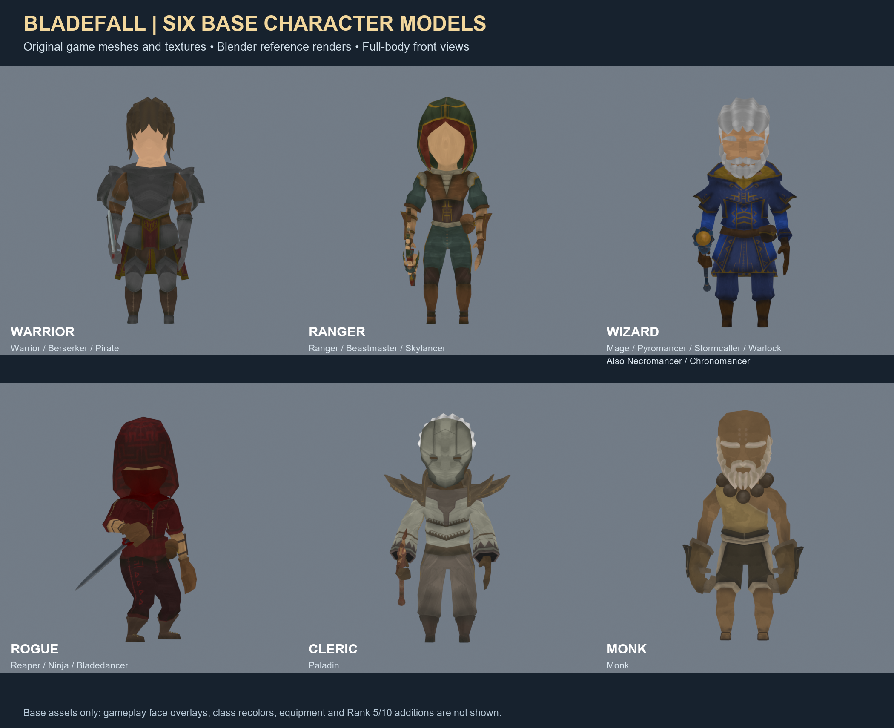

Bladefall: six base character models
Actual original game assets rendered together for concept-art reference. These show the base meshes and textures; gameplay face overlays, class colors, equipped weapons and earned skin additions are not included.
Open full-resolution image to save or share with GPT

On mobile, open the full-resolution image, then press and hold to save it.